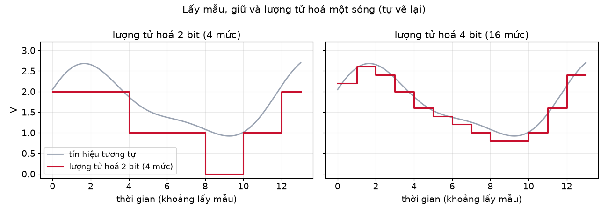
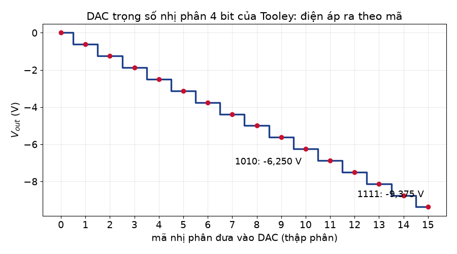
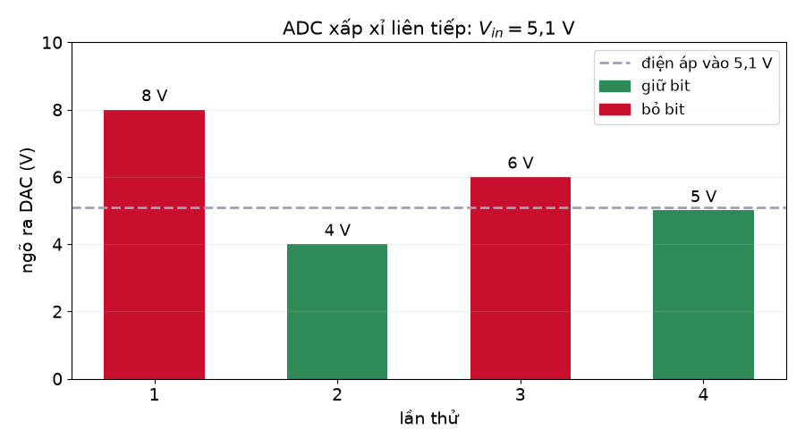

Cách một máy tính số nhận tín hiệu tương tự từ cảm biến và tạo lại tín hiệu tương tự: lấy mẫu, lượng tử hoá, DAC trọng số nhị phân và R-2R, bốn kiểu ADC và cách thử lỗi. Dựng từ Tooley Chương 3 và Floyd Chương 12 (không có slide của giảng viên).
CO/CLO: CO4không có slide của giảng viên (dựng từ sách)Câu hỏi: 109 (38 gốc)
Không có slide của giảng viên cho mục này (dựng từ sách) · Tooley Ch.3 (tr.39-52) · Floyd Ch.12 §12-1 đến 12-3 (tr.698-722) · Bản đồ nội dung sách
Ánh xạ sách của module này
Tooley: Ch.3 Data conversion (p.39-52): analogue and digital signals, quantising, binary-weighted and R-2R DACs, flash, successive approximation, ramp and dual-slope ADCs; 13 MCQs (key A.3, p.377)
Floyd: Ch.12 Signal Conversion and Processing, sections 12-1 to 12-3 (p.698-722): sampling, Nyquist, aliasing, quantization, flash, dual-slope, successive-approximation and sigma-delta ADCs, binary-weighted and R/2R DACs, performance and testing. Sections 12-4, 12-5 (DSP) only mentioned.
Hai sách khớp tốt: Tooley đi từ lượng tử hoá đến năm kiểu bộ chuyển đổi với 13 câu trắc nghiệm; Floyd bổ sung lấy mẫu, Nyquist, aliasing, sigma-delta, thông số và cách thử DAC/ADC, kèm câu Đúng/Sai, Self-Test và bài lẻ có đáp án in. Không có slide của giảng viên cho nội dung này.
Máy tính chỉ hiểu bit nên tín hiệu thực phải được lấy mẫu và lượng tử hoá
Tín hiệu tương tự và số; ADC và DAC
Lấy mẫu, giữ, định lý Nyquist
Chồng phổ và bộ lọc chống chồng phổ
Lượng tử hoá và số bit
Tín hiệu thực có dạng tương tự và số, nên cần hai chiều chuyển đổi: ADC và DAC
Tín hiệu thực tồn tại ở dạng số (bật/tắt) và dạng tương tự (biến thiên liên tục). Hệ thống số và máy tính phải nhận và tạo cả hai: ADC đổi tương tự sang số, DAC đổi số sang tương tự.
Mức logic 1 thường khoảng +5 V, mức 0 là 0 V (Tooley; mức thật phụ thuộc họ logic, xem Module 02).
ADC có một ngõ vào tương tự và 8, 10, 12 hoặc 16 ngõ ra số; DAC có ngõ vào số và một ngõ ra tương tự.
Tooley §3.1-3.3 tr.39, 41, 45; Hình 3.1, 3.5, 3.8📖 Giải thích cho người mới bắt đầu
Tín hiệu từ cảm biến (áp suất, nhiệt độ, vị trí) là tương tự; máy tính chỉ làm việc với bit. ADC là "phiên dịch" đi vào, DAC là "phiên dịch" đi ra.
Lấy mẫu rồi giữ biến tín hiệu liên tục thành các giá trị rời rạc theo thời gian
Lấy mẫu là lấy đủ nhiều giá trị rời rạc trên một dạng sóng để xác định hình dạng của nó. Sau đó giữ mỗi mức không đổi tới mẫu kế để ADC có thời gian xử lý, cho dạng bậc thang.
Định lý lấy mẫu (Nyquist)
$$f_{sample}\geq 2\,f_{a(max)}$$
f_{sample}tần số lấy mẫu
f_{a(max)}thành phần tần số cao nhất của tín hiệu (tần số Nyquist)
Trong thực tế nên chọn lớn hơn hai lần.
Floyd §12-1 tr.698-701; Phương trình 12-1📖 Giải thích cho người mới bắt đầu
Hình dung chụp ảnh quả bóng đang nảy: một ảnh không cho biết đường đi, hai ảnh cho rất ít, bốn ảnh bắt đầu thấy quỹ đạo (Floyd Hình 12-2). Lớp chữ PDF của Floyd làm mất dấu lớn hơn hoặc bằng trong phương trình 12-1; ảnh trang xác nhận dấu đó.
Lấy mẫu chậm hơn hai lần tần số tín hiệu làm phổ chồng lên nhau và sinh tín hiệu giả
Mọi tín hiệu (trừ sóng sin thuần) chứa các hài. Thành phần cao hơn tần số Nyquist chồng vào phổ của xung lấy mẫu và hiện ra như tín hiệu tần thấp giả: aliasing (Floyd Hình 12-3, 12-4).
Cách tránh: đặt bộ lọc thông thấp chống chồng phổ trước mạch lấy mẫu, hoặc tăng tần số lấy mẫu (bị ADC giới hạn).
Âm thanh số lấy mẫu 32, 44,1 hoặc 48 kHz; đĩa CD 44,1 kHz ghi được tới khoảng 22 kHz, vượt 20 kHz của thiết bị âm thanh thông thường.
Floyd §12-1 tr.699-700; Hình 12-3, 12-4📖 Giải thích cho người mới bắt đầu
Sóng sin 5 kHz lấy mẫu ở 8 kHz hiện ra như sóng 3 kHz sau khi dựng lại ($|f_s-f|=3$ kHz): đó là alias. Phép tính này là kết quả chuẩn cho sóng sin; Floyd chỉ mô tả bằng phổ.
Lượng tử hoá gán mỗi mẫu vào một mức rời rạc: càng nhiều bit càng sát tín hiệu gốc
Lượng tử hoá là gán mã nhị phân cho mỗi giá trị đã lấy mẫu. Floyd làm tròn xuống mức thấp hơn; hình so sánh 2 bit (4 mức) với 4 bit (16 mức).

tự vẽ lại theo Floyd Hình 12-7 đến 12-10
ADC thực dùng 12 đến 24 bit (Floyd). Tooley minh hoạ bằng ADC 4 bit lưỡng cực: 16 mức, mã bù hai, MSB = 1 là âm (Hình 3.3).
Tooley Hình 3.2: điện áp 9,9 V thành mức 10, mã 1010.
Tooley §3.1 tr.40-42; Floyd §12-1 tr.701-703📖 Giải thích cho người mới bắt đầu
Mỗi bit thêm vào làm số mức gấp đôi ($2^n$) và bước nhỏ đi một nửa. Với n bit có $2^n-1$ bước từ mức nhỏ nhất đến lớn nhất.
PHẦN 2/5
02
DAC cộng các dòng điện theo trọng số nhị phân để tạo điện áp ra
DAC trọng số nhị phân và bảng điện áp ra
Vì sao thang R-2R thực dụng hơn
Độ phân giải và độ chính xác
Bộ lọc ngõ ra
DAC trọng số nhị phân dùng điện trở R, 2R, 4R, 8R để cho mỗi bit một độ lợi khác nhau
Bộ khuếch đại cộng đảo có điện trở hồi tiếp $R$ và các điện trở đầu vào $R, 2R, 4R, 8R$ nên độ lợi của bit 3 (MSB) là $-1$, bit 2 là $-0{,}5$, bit 1 là $-0{,}25$, bit 0 (LSB) là $-0{,}125$.
Ví dụ Tooley: mã 1010 cho $V_{out}=-5-1{,}25=-6{,}25$ V; mã 1111 cho $-9{,}375$ V; bước mỗi mã là $-0{,}625$ V.

tự vẽ lại theo Tooley Bảng 3.2Tooley §3.2 tr.41-43; Hình 3.6a; Bảng 3.1, 3.2📖 Giải thích cho người mới bắt đầu
Mỗi bit "1" đóng góp một dòng tỉ lệ nghịch với điện trở của nó; $R_f$ cộng các dòng thành điện áp. Dấu âm vì op-amp ở chế độ đảo; thêm một tầng đảo nữa để được điện áp dương. Tooley nói "tám trạng thái" cho Bảng 3.2 nhưng bảng có 16 mã (4 bit).
Dùng công tắc tương tự và điện áp chuẩn chính xác cải thiện DAC, nhưng dải điện trở vẫn quá rộng
Bản cải tiến thay chốt dữ liệu bằng bốn công tắc tương tự nối đầu vào với điện áp chuẩn $V_{ref}$ (khi bit = 1) hoặc 0 V. Điện áp chuẩn chính xác và ổn định hơn mức logic, và có thể âm để $V_{out}$ dương (thường $\pm5$ V, $\pm10$ V).
Nhưng DAC 10 bit với $R=1$ kΩ cần điện trở từ 1 kΩ đến 512 kΩ, tất cả phải dung sai 1 % hoặc tốt hơn. Floyd: 8 bit cần từ R đến 128R, dung sai dưới 0,5 %, khó sản xuất hàng loạt.
Tooley §3.2 tr.43-44; Hình 3.6b; Floyd §12-3 tr.716📖 Giải thích cho người mới bắt đầu
Bài toán là khớp điện trở trên một chip: sai số tương đối giữa 1 kΩ và 512 kΩ khó giữ nhỏ. Thang R-2R giải quyết điều này.
Thang R-2R chỉ cần hai giá trị điện trở nên dễ chế tạo và khớp nhau
Chỉ cần $R$ và $2R$ (giá trị bất kỳ miễn một giá trị gấp đôi giá trị kia). Phân tích Thevenin (Floyd Hình 12-30), với mức cao +5 V và $R_f=2R$:
Mã
D3
D2
D1
D0
Chỉ một bit = 1
1000 → −5 V
0100 → −2,5 V
0010 → −1,25 V
0001 → −0,625 V
Mỗi bit thấp hơn cho điện áp ra giảm một nửa, nên $V_{out}$ tỉ lệ với trọng số nhị phân.
Tooley §3.2 tr.44, Hình 3.6c; Floyd §12-3 tr.717-719, Hình 12-29, 12-30📖 Giải thích cho người mới bắt đầu
Site đã kiểm bằng cách giải hệ phương trình nút của thang (numpy) và đối chiếu với công thức đóng cho cả 16 mã: khớp.
Độ phân giải chỉ phụ thuộc số bit, còn độ chính xác phụ thuộc điện trở và điện áp chuẩn
Hai khái niệm khác nhau (Tooley 3.2.1, Floyd 12-3):
Độ phân giải: số mức hay số bước ra. DAC n bit có $2^n$ mức, $2^n-1$ bước; Floyd tính độ phân giải là một phần của $2^n-1$.
Độ chính xác: sai khác với đầu ra mong muốn, tính theo phần trăm toàn thang; DAC rẻ đạt 1 % đến 2 %; lý tưởng không tệ hơn ±½ LSB.
Độ phân giải của DAC n bit
$$\text{resolution}=\dfrac{1}{2^n-1}\times100\%$$
n
4
8
12
16
Độ phân giải
6,67 %
0,392 %
0,0244 %
0,00153 %
Bộ lọc thông thấp ở ngõ ra làm mịn các bậc thang (Tooley 3.2.2).
Tooley §3.2.1-3.2.2 tr.45; Floyd §12-3 tr.720, Ví dụ 12-4📖 Giải thích cho người mới bắt đầu
Ví dụ: DAC 8 bit có 256 mức nhưng độ phân giải Floyd là $100/255=0{,}392\%$; DAC 10 V có độ chính xác ±0,1 % sai tối đa $10\times0{,}001=10$ mV.
PHẦN 3/5
03
Bốn kiểu ADC đánh đổi tốc độ lấy độ chính xác và độ đơn giản
Flash: nhanh nhất, nhiều bộ so sánh
Xấp xỉ liên tiếp: n bước, thời gian cố định
Dốc và hai dốc: chính xác, chậm
Sigma-delta và bảng so sánh
ADC flash so sánh đồng thời với mọi mức chuẩn nên nhanh nhất nhưng cần $2^n-1$ bộ so sánh
Bộ chia áp đặt mức chuẩn cho từng bộ so sánh; ngõ ra bộ so sánh nào có điện áp vào lớn hơn mức chuẩn thì lên 1; bộ mã hoá ưu tiên cho mã của đầu vào 1 cao nhất (Tooley Hình 3.9; Floyd Hình 12-12).
Điện áp vào $V_{in}$
Bit 2 1 0
< 0,5 V
000
0,5 đến 1,5 V
001
1,5 đến 2,5 V
010
2,5 đến 3,5 V
011
3,5 đến 4,5 V
100
4,5 đến 5,5 V
101
5,5 đến 6,5 V
110
> 6,5 V
111
Ví dụ Tooley: vào 2 V thì IC1 và IC2 lên 1, mã 010. 3 bit cần 7 bộ so sánh, 4 bit cần 15, 8 bit cần 255 (Tooley nói tròn 256; 10 bit: 1 023, Tooley nói 1 024). Thời gian điển hình 50 ns đến 1 µs.
Tooley §3.3 tr.45-47, Hình 3.9; Floyd §12-2 tr.705-707, Hình 12-12📖 Giải thích cho người mới bắt đầu
Đây là ADC của tín hiệu thay đổi rất nhanh, nhưng đắt. Điều kiện biên (đúng bằng 0,5 V, 1,5 V...) sách không xác định.
ADC xấp xỉ liên tiếp thử từng bit từ MSB nên luôn mất n bước, nhanh hơn dốc nhưng chậm hơn flash
Gồm DAC, thanh ghi xấp xỉ liên tiếp (SAR) và một bộ so sánh. Mỗi bước bật một bit (từ MSB), so ngõ ra DAC với $V_{in}$: DAC lớn hơn thì bỏ bit, nhỏ hơn thì giữ bit. Ví dụ Floyd, DAC có trọng số 8, 4, 2, 1 V, vào 5,1 V:

tự vẽ lại theo Floyd Hình 12-18
8 V bỏ, 4 V giữ, 6 V bỏ, 5 V giữ: mã 0101. Thời gian chuyển đổi cố định (từ tín hiệu SC đến EOC), điển hình 10 đến 100 µs. ADC0804 (8 bit): 8 phép so sánh, 64 chu kỳ xung nhịp.
Tooley §3.3 tr.47-48, Hình 3.10; Floyd §12-2 tr.709-711, Hình 12-17, 12-18📖 Giải thích cho người mới bắt đầu
Giống trò đoán số bằng cách chia đôi: mỗi lần loại một nửa khoảng còn lại. n bit cần n lần so sánh.
ADC dốc và hai dốc đổi điện áp thành thời gian đếm xung: rất chính xác và chống nhiễu nhưng chậm
Dốc (ramp): bộ phát dốc, một bộ so sánh và cổng cho xung nhịp vào bộ đếm cho đến khi dốc vượt $V_{in}$; số xung đếm biểu diễn $V_{in}$ (Tooley Hình 3.11, 3.12).
Hai dốc (dual slope): dốc lên có độ nghiêng phụ thuộc $V_{in}$ trong thời gian cố định, rồi dốc xuống có độ nghiêng cố định về 0 V; thời gian xả tỉ lệ $V_{in}$ (Tooley Hình 3.13, Floyd Hình 12-16). Độ chính xác cao, loại được nhiễu, dùng trong vôn kế số; thời gian 500 µs đến 20 ms.
Tooley §3.3 tr.48-50, Hình 3.11 đến 3.13; Floyd §12-2 tr.707-709, Hình 12-15, 12-16📖 Giải thích cho người mới bắt đầu
Trong ví dụ Tooley (Hình 3.13) dốc lên đếm 7 xung, dốc xuống đếm 5 xung.
Sigma-delta lượng tử hoá độ chênh giữa hai mẫu bằng 1 bit và dùng nhiều trong âm thanh viễn thông
Dựa trên điều chế delta: lượng tử hoá độ tăng giảm giữa hai mẫu liên tiếp, 1 bit mỗi lần; ngõ ra là luồng 1 bit, số bit 1 trong một khoảng cho biết biên độ (nhiều bit 1 nhất là điện áp dương cực đại, một nửa là 0, không bit 1 là âm cực đại). Một bộ đếm đổi luồng thành mã n bit (Floyd 12-2, Hình 12-20 đến 12-22).
Kiểu ADC
Tốc độ
Thời gian điển hình
Đặc điểm
Flash
nhanh nhất
50 ns đến 1 µs
$2^n-1$ bộ so sánh, đắt
Xấp xỉ liên tiếp
trung bình
10 đến 100 µs
n bước, thời gian cố định, rẻ
Hai dốc
chậm
500 µs đến 20 ms
chính xác, chống nhiễu
Sigma-delta
tuỳ thiết kế
sách không nêu
luồng 1 bit, âm thanh viễn thông
Floyd §12-2 tr.711-713; Tooley §3.3 tr.46-48📖 Giải thích cho người mới bắt đầu
Ví dụ Floyd: 4096 bit 1 trong khoảng khi tín hiệu cực đại dương, 2048 khi bằng 0, không có bit 1 khi cực đại âm.
PHẦN 4/5
04
Thử bộ chuyển đổi bằng đường dốc để phát hiện mã thiếu, mã sai, bước lùi và độ lệch
Thử ADC bằng DAC ở ngõ ra
Ba lỗi của ADC
Bốn lỗi của DAC
Từ dạng lỗi suy ra linh kiện hỏng
Phép thử chuẩn đưa đường dốc vào ADC, chuyển ngược mã bằng DAC rồi so hai đường dốc
Đưa vào ADC một đường dốc tuyến tính, đưa mã ra qua một DAC chuẩn để có đường bậc thang rồi so với đường dốc vào (Floyd Hình 12-23). Ba lỗi hay gặp (Hình 12-24):
Mã thiếu: một bậc thang bị bỏ qua, ví dụ không có mã 1001 hoặc 0011.
Mã sai: nhiều mã sai, ví dụ một đường bit bị kẹt ở mức nào đó.
Độ lệch (offset): ADC hiểu điện áp vào lớn hơn giá trị thật.
Ví dụ Floyd 12-4: ADC flash 4 bit thiếu mã 0011, nhiều khả năng ngõ ra bộ so sánh 3 kẹt ở mức THẤP.
Floyd §12-2 tr.713-715, Hình 12-23 đến 12-25📖 Giải thích cho người mới bắt đầu
Chỉ cần nhìn dạng bậc thang là suy ra được loại lỗi: thiếu bậc, bậc sai, hay cả đường bị tịnh tiến.
DAC có bốn lỗi đặc trưng: không đơn điệu, phi tuyến vi phân, độ lợi sai và độ lệch
Thử DAC bằng cách đưa các mã từ 0 đến $2^n-1$ theo thứ tự tăng và quan sát bậc thang ra (Floyd Hình 12-31, 12-32):
Không đơn điệu: có bước lùi; ví dụ bit 1 luôn bằng 0 hoặc kẹt ở 1.
Phi tuyến vi phân: một số bước nhỏ hơn hoặc lớn hơn bình thường (ví dụ một điện trở của bit sai).
Độ lợi thấp hoặc cao: mọi bước nhỏ hơn hoặc lớn hơn lý tưởng (ví dụ điện trở hồi tiếp sai).
Độ lệch: mã 0000 cho điện áp khác 0, cùng một lượng ở mọi bước (có thể do op-amp hỏng).
Thông số khác: đơn điệu (không có bước lùi), thời gian ổn định (đến ±½ LSB của giá trị cuối).
Floyd §12-3 tr.719-722, Hình 12-31, 12-32📖 Giải thích cho người mới bắt đầu
Ví dụ Floyd: dãy ra 0010, 0011, 0010, 0011, 0110... cho thấy bit 1 kẹt ở mức CAO. Kiểm tra chân vào của bit đó: nếu chân đổi trạng thái thì lỗi nằm trong DAC, nếu luôn CAO thì tìm ngắn mạch lên +V.
PHẦN 5/5
05
Bộ chuyển đổi nằm giữa cảm biến và bộ xử lý số, và chuỗi xử lý có thứ tự cố định
Chuỗi xử lý tín hiệu số
Ví dụ số: chọn số bit và tốc độ
Giới hạn của module này
Chuỗi xử lý số có thứ tự: lọc chống chồng phổ, lấy mẫu-giữ, ADC, bộ xử lý, DAC, lọc dựng lại
Floyd tóm tắt: một hệ xử lý tín hiệu số gồm bộ lọc chống chồng phổ, mạch lấy mẫu-giữ, ADC, bộ xử lý tín hiệu số (DSP), DAC và bộ lọc dựng lại (hậu lọc) làm mịn bậc thang của DAC.
Lọc thông thấp trước lấy mẫu (loại tần số trên Nyquist).
Lấy mẫu và giữ.
ADC đổi mẫu thành mã.
Bộ xử lý làm việc trên mã.
DAC đổi mã ngược lại thành bậc thang.
Lọc dựng lại làm mịn.
Floyd §12-4 tr.724-725 và tóm tắt chương tr.731📖 Giải thích cho người mới bắt đầu
Module này không đi vào kiến trúc DSP (Floyd 12-5: Harvard, pipeline, TMS320C6000); mục đó ngoài phạm vi ở đây.
Chọn số bit từ độ phân giải cần có và tần số tín hiệu tối đa từ thời gian chuyển đổi
Hai phép tính điển hình (do site đặt, dùng các công thức đã nêu):
Số bit: cần độ phân giải tốt hơn 0,1 %: $100/(2^n-1)<0{,}1$ cho $n=10$ ($0{,}0978\%$), vì $n=9$ chỉ đạt $0{,}196\%$.
Tốc độ: ADC mất 10 µs mỗi lần chuyển đổi, lấy mẫu liên tục: $f_s=100$ kS/s, nên tín hiệu cao nhất $f_{a(max)}=f_s/2=50$ kHz.
Giả thiết "lấy mẫu liên tục với tốc độ tối đa, thông lượng bằng 1/thời gian chuyển đổi" là giả thiết của phép tính chứ không phải của sách; Floyd định nghĩa thông lượng là tốc độ lấy mẫu ADC xử lý được.
Floyd §12-1, 12-2, 12-3 (các công thức); Tooley §3.3 (thời gian chuyển đổi)📖 Giải thích cho người mới bắt đầu
Kết luận: bộ chuyển đổi nhanh hơn cho phép tín hiệu rộng hơn; nhiều bit hơn cho độ phân giải tốt hơn nhưng không làm nhanh hơn.
Ghi chú chi tiết
Năm ví dụ có số
Ví dụ · Ví dụ 1: điện áp ra của DAC trọng số (Tooley)
Mã 1011 đưa vào DAC của Tooley Hình 3.6a (logic 1 = +5 V). $V_{out}=-5(1+0+0{,}25+0{,}125)=-6{,}875$ V, cũng bằng $-0{,}625\times11$.
Kết quả (kiểm bằng chương trình): -6.875 V
Ví dụ · Ví dụ 2: thang R-2R (Floyd)
Mã 1010 vào thang R-2R, +5 V, $R_f=2R$: $V_{out}=-5(1+0+\tfrac14+0)=-6{,}25$ V.
Kết quả (kiểm bằng chương trình): -6.25 V
Ví dụ · Ví dụ 3: ADC xấp xỉ liên tiếp
4 bit, trọng số 8, 4, 2, 1 V, vào 11,7 V: thử 8 V giữ, +4 V = 12 V bỏ, +2 V = 10 V giữ, +1 V = 11 V giữ: mã 1011.
Kết quả (kiểm bằng chương trình): 1011
Ví dụ · Ví dụ 4: số bộ so sánh và độ phân giải
ADC flash 6 bit cần $2^6-1=63$ bộ so sánh; DAC 6 bit có độ phân giải $100/63=1{,}587\%$.
Kết quả (kiểm bằng chương trình): 63; 1.587 %
Ví dụ · Ví dụ 5: lấy mẫu giọng nói
Giọng nói chứa tần số tới khoảng 10 kHz nên cần ít nhất 20 kHz; nếu chỉ giữ tới 4 kHz thì ít nhất 8 kHz và vẫn dễ nghe (Floyd 12-1).
Kết quả (kiểm bằng chương trình): 20 kHz; 8 kHz
Ánh xạ nguồn
Module không có slide của giảng viên. Tooley Ch.3 (tr.39 đến 52, 13 câu trắc nghiệm, khoá A.3 đọc từ ảnh quét). Floyd Ch.12 mục 12-1 đến 12-3 (tr.698 đến 722). Floyd 12-4 và 12-5 (xử lý tín hiệu số, DSP) chỉ được nhắc ngắn, không đi sâu.
Tooley 3.2 (Bảng 3.2) viết "tám trạng thái đầu vào" cho DAC 4 bit, nhưng bảng có 16 mã (từ 0000 đến 1111) và $V_{out}$ từ 0 V đến −9,375 V.
Tooley 3.3 nói ADC flash 8 bit cần 256 bộ so sánh và 10 bit cần 1 024; số chính xác là $2^n-1$ = 255 và 1 023 (Floyd 12-2 cho đúng công thức). Hình 3.9 (3 bit, 7 bộ so sánh) vẫn đúng.
Tooley Chương 3 câu 11: khoá in (b) "trọng số nhị phân", trong khi văn bản 3.3 viết DAC của ADC xấp xỉ liên tiếp "thường dựa trên thang R-2R". Site giữ khoá (b) vì thang R-2R cho dòng theo trọng số nhị phân và hai phương án kia không phải kiểu DAC.
Tooley Chương 3 câu 10: lớp chữ OCR đọc "50 ns to 1 ps"; ảnh trang và khoá (a) cho thấy đơn vị là micro giây (1 µs).
Floyd Chương 12 Đúng/Sai số 6 in "Successful approximation" (đúng là successive); khoá in là F. Site ghi rõ đây là lỗi chữ.
Floyd Chương 12 Bài 19(b): đáp án in 3,22 %; giá trị đúng $100/31=3{,}2258\%$ làm tròn 3,23 % (sách cắt cụt). Ý (c) in 0,024 % (đúng 0,0244 %).
Floyd Chương 12 Bài 7: đáp án in là 200 (giá trị tuyệt đối); mạch đảo nên độ lợi có dấu là −200. Bài 9 in −33.
Floyd Chương 12 Bài 25 và 27: đáp án in ở phụ lục (A-27) không khớp đề (Bài 25 hỏi mục đích của ADC nhưng đáp án nói về DAC; Bài 27 hỏi số lệnh trong một giây của C64xx 600 MHz mà đáp án in là 18,75 triệu lệnh/s). Hai bài thuộc phần DSP nên không đưa vào ngân hàng.
Floyd Chương 12 Bài 13, 14 (ADC xấp xỉ liên tiếp "maximum ladder output +8 V") và Bài 16 ("lowest-weighted resistor"): đề mơ hồ về trọng số và điện trở nào, nên không đưa vào ngân hàng; Bài 13 có đáp án in "11, 11, 11" chưa giải thích được từ đề.
Floyd 12-3: độ phân giải DAC tính là một phần của $2^n-1$ (6,67 % cho 4 bit) nhưng LSB của DAC 8 bit được nói là 0,39 % toàn thang ($100/256$): hai cách tính khác nhau trong cùng mục. Site dùng $2^n-1$ cho "độ phân giải" và không hỏi về "LSB theo phần trăm".
Lớp chữ PDF của Floyd làm mất các dấu so sánh và dấu trừ (ví dụ Phương trình 12-1 hiện "fsample + 2fa(max)", "conversion time of 100 ms" thay vì 100 µs). Các công thức và số trong module được kiểm lại bằng ảnh trang hoặc bằng tính toán.
Tooley 3.1 và Floyd 12-1 đều không cho công thức tần số alias; ví dụ 5 kHz lấy mẫu 8 kHz thành 3 kHz là kết quả chuẩn cho sóng sin do site tính.
Chương 3 của Tooley mở đầu hứa "sau này sẽ cho thấy thiết bị chuyển đổi dữ liệu dùng trong một số hệ thống tàu bay thực tế" nhưng chương không có ví dụ tàu bay riêng. Module không đưa ví dụ tàu bay vì chưa có nguồn đã đọc.